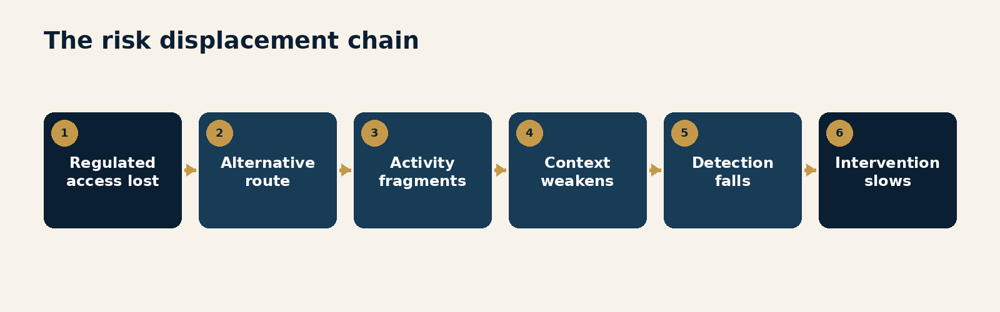
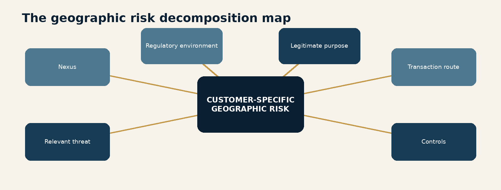
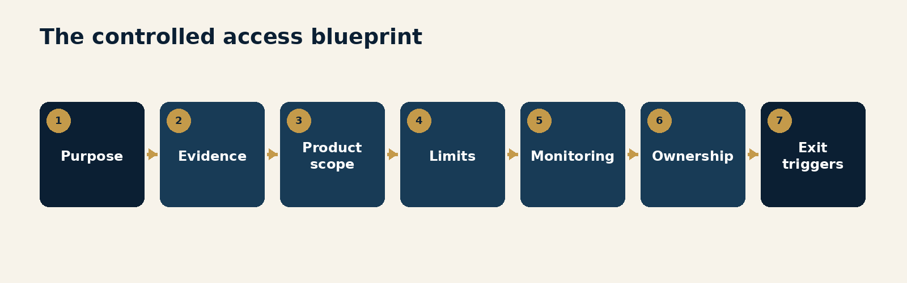
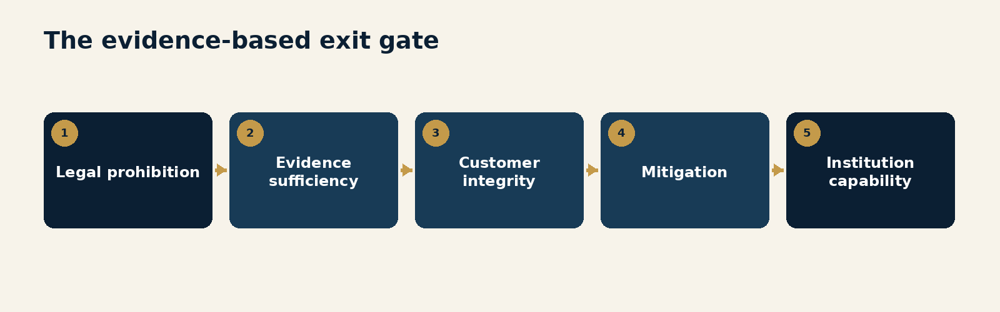
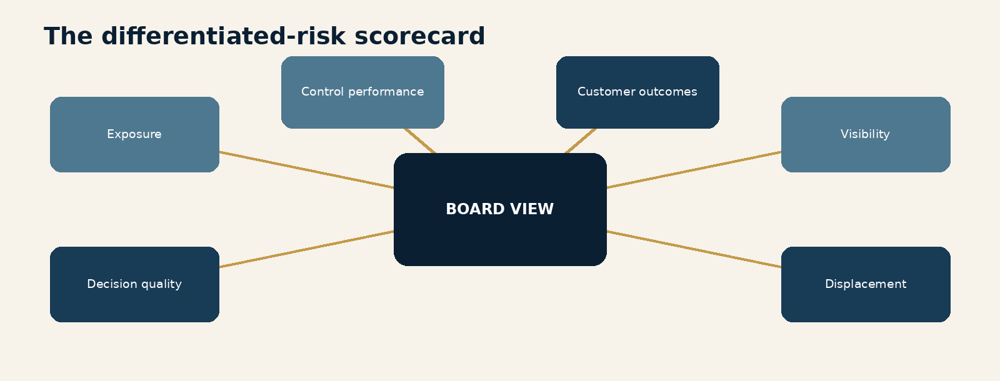

Foreword
Compliance has a sentence that can end almost any difficult conversation:
"That is outside risk appetite."
Sometimes the sentence is exactly right.
The activity may be prohibited. A sanctions obligation may require assets to be frozen or a transaction rejected. The customer may refuse to provide information the institution is legally required to obtain. Ownership may remain opaque after proportionate inquiry. The proposed service may create risk the institution cannot monitor or control. Credible evidence may show misuse, deception or unacceptable conduct. In those circumstances, declining or ending the relationship is not a failure to understand risk.
It is the result of understanding it.
But the same sentence can also conceal a different process.
A country appears on a list. A sector is described as high risk. A customer type creates more work than revenue. A control is difficult to configure. A correspondent asks uncomfortable questions. A supervisory message is interpreted more broadly with every internal retelling. Eventually the institution decides that the simplest way to manage the risk is not to have the customer.
The portfolio looks cleaner.
The risk has not necessarily become smaller.
It may have moved to another provider with weaker controls. It may have fragmented across personal accounts, intermediaries or informal payment routes. It may have shifted into cash. It may now be conducted through an unregistered money-transfer business or an opaque digital channel. A legitimate charity may lose the ability to move funds into a crisis area. A remittance provider may lose banking access and its customers may lose a regulated way to support families. A small business may discover that its country, sector or customer base has been assessed before its own controls have.
No customer means no alert.
It also means no customer due diligence, no transaction history, no behavioural baseline, no network view and no direct opportunity to intervene.
The safest customer in the dashboard may simply be the customer who found a less visible door.
This is why the Financial Action Task Force has repeatedly said that wholesale de-risking is inconsistent with a proper risk-based approach. Its 2025 guidance on financial inclusion goes further. Financial inclusion and the fight against financial crime are mutually supportive because broader participation in the regulated financial system increases transparency, extends the reach of controls and helps law enforcement investigate illicit activity.
That proposition should not be mistaken for a social-policy footnote to compliance.
It is a statement about control effectiveness.
A financial system protects itself partly by keeping illicit actors out. It also protects itself by bringing legitimate activity into channels where identity can be established, transactions can be observed, patterns can be connected and suspicious conduct can be reported or stopped. Exclusion can protect an individual institution. Excessive exclusion can weaken the information environment on which the whole system depends.
The challenge is that this tension does not fit neatly into the usual risk appetite conversation.
Most institutions are designed to measure the risk they accept. They are less prepared to measure the risk they displace. Governance committees see the account closure, not the customer's next route. Management information records the reduction in high-risk relationships, not the loss of visibility. Profitability models capture enhanced-due-diligence cost, not the public value of keeping legitimate flows in regulated channels. An exit is a visible action. The system effect is largely invisible.
That asymmetry encourages a particular form of prudence.
The institution is rewarded for avoiding the risk in front of it, even if the result makes risk harder to detect elsewhere.
This volume argues for a more complete discipline: responsible risk differentiation.
Responsible risk differentiation does not mean accepting every customer. It means separating four different dispositions:
prohibited risk, where law or binding restriction determines the outcome;
unmanageable risk, where the institution cannot obtain sufficient evidence or apply controls capable of reducing the exposure within appetite;
manageable elevated risk, where additional evidence, product design, limits, monitoring and review can make the relationship serviceable; and
lower risk, where proportionate or simplified measures may be appropriate under applicable rules.
The distinction matters because "high risk" is not a single conclusion.
It may mean more information is needed. It may mean enhanced monitoring is required. It may mean the product should be narrower. It may mean specialist approval is necessary. It may mean the customer should not be served. The label should begin analysis, not perform it.

Responsible differentiation asks harder questions than blanket exclusion:
What exactly creates the risk?
Is the risk inherent to the activity or specific to the customer?
Which evidence would change the assessment?
Which control would reduce the exposure?
Can the institution operate that control consistently?
Is a narrower product safer than a binary yes-or-no decision?
What would justify escalation, restriction or exit later?
What happens to legitimate activity if access is removed?
This requires better data, more precise policy, stronger customer understanding and clearer decision rights. It also requires leaders to distinguish the cost of compliance from the presence of financial-crime risk. Some relationships are expensive because the institution's process is fragmented, not because the customer is uniquely dangerous. A thirty-page questionnaire is not automatically evidence of enhanced diligence. It may be evidence that several teams have not compared notes.
The same discipline applies to geography and sector.
A country rating can identify environmental risk. It cannot explain the ownership, purpose, counterparties, delivery model and control maturity of a particular customer. A sector rating can identify common vulnerabilities. It cannot establish that every money-transfer provider, non-profit organisation, fintech, digital-asset business, correspondent bank or cash-intensive merchant presents the same risk.
A red country on a PowerPoint map is not a customer assessment.
It is cartography with anxiety.
This volume therefore moves from principle to operation. It examines where risk goes after exclusion, how to decompose geographic and sector risk, why visibility should be treated as a control benefit, how to design controlled access, when refusal or exit is warranted, and how boards can govern both accepted and displaced risk.
The central proposition is simple:
Good compliance distinguishes risk. Poor compliance merely avoids complexity.
The first protects the institution and strengthens the financial system.
The second can make one dashboard look safer while making the world outside it harder to see.
Introduction
The Risk We Cannot See
The modern compliance programme is built around visibility.
Customer due diligence establishes who is involved. Beneficial-ownership analysis shows who controls or benefits. Transaction monitoring looks for patterns. Sanctions screening tests names, locations and other attributes. Device and network intelligence links activity that would otherwise appear separate. Case management preserves evidence and rationale. Suspicious-activity reporting turns private observations into public intelligence.
Every one of these controls depends on activity occurring within observable channels.
That creates a paradox.
An institution can reduce its direct exposure by excluding a difficult customer or category. Yet if the activity continues through a less transparent route, the wider financial-crime risk may become harder to identify. The institution has protected its perimeter, but the system has lost information.
The paradox is not an argument against refusal.
It is an argument against pretending that refusal makes the underlying activity disappear.
De-risking is not the same as risk management
The term de-risking is often used loosely. It can describe anything from a lawful sanctions rejection to the commercial closure of an unprofitable account. That imprecision creates unnecessary disagreement.
FATF uses the term more specifically: refusing, terminating or restricting business relationships with customers or categories of customers to avoid, rather than understand and manage, risk in line with the risk-based approach.
That definition separates two activities that can look identical in an account system.
Both may end with "declined" or "closed."
The first is a risk decision. The institution has identified the relevant exposure, assessed the customer and proposed activity, considered available mitigation, and concluded that the relationship is prohibited or cannot be managed within its legal, operational or risk constraints.
The second is risk avoidance. The institution has used a broad category, incomplete evidence or process difficulty as a substitute for customer-specific judgment.
The outcome alone does not reveal which occurred.
The quality of the reasoning does.
The individual-institution view
From the perspective of a single institution, exclusion can be rational.
A customer may generate limited revenue and substantial due-diligence cost. A cross-border corridor may create sanctions, corruption, fraud and money-laundering exposure. A sector may produce complex ownership, rapid value movement or nested access. Supervisors may be perceived as unforgiving. A single failure can create legal, financial and reputational consequences far greater than the value of the relationship.
Senior leaders may therefore ask a straightforward question:
"Why should we take this risk?"
The answer cannot be moral pressure.
An institution is not obliged to provide every lawful service to every customer. It must operate safely, comply with law, protect its customers, allocate finite control capacity and make legitimate commercial decisions.
The stronger answer is that the question is incomplete.
Leaders should also ask:
Which part of the risk is inherent, and which part can be mitigated?
Are we declining the customer because of evidence, or because our process cannot distinguish it?
Would a constrained product create acceptable exposure?
Are our control costs driven by risk, or by internal fragmentation?
Does our decision create customer, conduct, competition or public-policy consequences?
If the activity is legitimate and persistent, where is it likely to go?
What information will the regulated system lose?
These questions do not force an approval.
They force a decision worthy of the term risk-based.
The system view
The system view is different.
The US Treasury's 2023 de-risking strategy identifies the effects of loss of financial access on remittances, humanitarian assistance and vulnerable communities. It also notes that de-risking can push activity outside the regulated financial system. World Bank work has described similar effects on remittance providers, local banks and smaller economies. The Financial Stability Board continues to treat access, cost, transparency and the health of correspondent-banking arrangements as central to improving cross-border payments.
These are not abstract consequences.
A bank that loses correspondent access may be unable to settle in a major currency. A licensed money-transfer provider without a bank account may be unable to serve a diaspora corridor. A non-profit organisation may be delayed in paying staff or suppliers during a humanitarian emergency. A legitimate customer who cannot open a business account may use a personal account, obscuring the nature of transactions. A community may rely more heavily on cash or unlicensed intermediaries.
Each move can reduce data quality.
Names are replaced by proxies. Business purpose disappears from payment records. Activity is split among accounts. Transactions become cash-intensive. Jurisdictions and counterparties become harder to connect. The customer may still be visible somewhere, but the financial narrative is broken into pieces.
Criminals benefit from fragmented narratives.
Compliance should be cautious about creating them.
Financial inclusion is an integrity issue
Financial inclusion is sometimes framed as a desirable social outcome that must be balanced against the harder objective of financial integrity.
FATF's 2025 guidance rejects that framing.
The two objectives can support one another. Bringing legitimate customers into regulated channels expands the population subject to identity, recordkeeping, monitoring, reporting and supervisory controls. It reduces the relative size of informal markets in which illicit activity can hide. It gives law enforcement a better opportunity to trace value.
This does not mean that inclusion automatically produces integrity.
Poorly controlled access can create abuse at scale. A low-friction product without reliable identity, transaction limits, monitoring, escalation or customer support can become an efficient crime service with pleasant onboarding.
The point is more disciplined:
regulated access plus effective controls can create both customer value and financial-crime visibility.
Access without control is unsafe.
Control without access can be blind.
The task is to design both.
The two errors of risk appetite
Risk appetite can fail in opposite directions.
The first failure is excessive acceptance. The institution pursues growth without sufficient evidence, specialist capability, monitoring or operational capacity. Control gaps are rationalised as temporary. Escalations become exceptions. The customer base expands faster than the programme's ability to understand it.
The second failure is excessive avoidance. The institution converts risk factors into categorical prohibitions, treats complexity as unmanageability, and confuses a smaller perimeter with a safer financial system.
Both failures avoid the same work.
They avoid precise differentiation.
The Responsible Risk Disposition Ladder provides a more useful starting point.
1. Lower risk
The customer, product, channel, geography and expected activity present lower exposure under the institution's assessment and applicable rules. Controls remain necessary, but their intensity should be proportionate. Where permitted, simplified measures can preserve effectiveness while reducing unnecessary friction and cost.
Lower risk does not mean no risk.
It means the institution has a reasoned basis for applying less intensive measures.
2. Manageable elevated risk
The relationship presents meaningful risk factors, but the institution can understand and mitigate them through additional evidence and controls. Measures may include enhanced due diligence, narrower functionality, value or velocity limits, source-of-funds evidence, counterparty constraints, more frequent review, specialist approval, tailored monitoring and explicit exit triggers.
This is the category most likely to be crushed by a binary risk appetite.
It is also where good compliance creates the most value.
3. Unmanageable risk
The relationship is not necessarily prohibited, but the institution cannot reduce the exposure to an acceptable level. Required information may be unavailable or unreliable. Ownership may remain opaque. The proposed activity may exceed monitoring capability. Control dependencies may be outside the institution's influence. The customer's conduct may make continuing assurance impossible.
Decline, restriction or exit is appropriate.
The decision should identify what made the risk unmanageable and what evidence, if any, could change that conclusion in the future.
4. Prohibited risk
Law, sanctions, licensing conditions or another binding obligation prevents the activity or requires a specific action.
This is not an appetite decision.
Governance should preserve that distinction. A risk committee cannot vote a prohibition into manageability.
High risk is an instruction to do more work
The phrase "high risk" should lead to one of three questions:
What additional evidence is required?
What additional control is required?
What fact makes the activity unacceptable or prohibited?
If the label produces none of these, it is not guiding the programme.
It is ending the conversation.
The FATF's treatment of jurisdictions under increased monitoring illustrates the point. The organisation states that inclusion on the so-called grey list does not itself call for enhanced due diligence against every relationship from that country, and that its standards do not envisage cutting off entire classes of customers. Institutions should use the information in their risk analysis and ensure that humanitarian, legitimate non-profit and remittance flows are not unnecessarily disrupted.
Geography matters.
It does not get to think on the institution's behalf.
A different leadership question
The usual leadership question is:
"How much high-risk business do we have?"
That question encourages teams to reduce a number.
A more useful set of questions is:
What risks are prohibited?
What risks can we not manage, and why?
Which elevated risks are serviceable under defined controls?
Which lower-risk populations receive disproportionate friction?
Which categories have exclusion rates materially higher than their demonstrated outcomes?
Which customers exit because of evidence and which because of unresolved process?
What happens to activity after refusal or closure?
What visibility, intelligence and legitimate economic activity are we giving up?
The point is not to make the board responsible for every account.
It is to ensure that risk appetite governs differentiation rather than rewarding avoidance.
The structure of this volume
The following chapters build a practical operating model.
Chapter 1 examines why saying no feels safer and how incentives convert risk appetite into a growing exclusion list.
Chapter 2 follows the displacement chain to show where risk goes when regulated access disappears.
Chapter 3 decomposes geography into decision-useful factors and explains why a jurisdiction rating is context, not destiny.
Chapter 4 applies the same discipline to sectors, including money-transfer providers, non-profit organisations, digital businesses and other categories often treated as homogeneous.
Chapter 5 develops the idea that visibility is itself a financial-crime control.
Chapter 6 provides a blueprint for controlled access: product scope, evidence, limits, monitoring, ownership and learning.
Chapter 7 defines when refusal, restriction or exit is warranted and how to preserve an auditable rationale.
Chapter 8 expands board measurement from accepted exposure to differentiated decisions, customer outcomes, control capacity and displaced risk.
The toolkit at the end converts the argument into eight artefacts that leaders can use.
This is the eighth and concluding volume of The Adaptive Compliance Series. Across the series, the consistent theme has been that compliance should operate as a living system: learning from data, adapting controls, placing decisions deliberately, governing technology and improving through use.
Responsible risk differentiation is where those ideas meet the customer.
The institution cannot claim to be adaptive if its answer to complexity is always exclusion.
Sometimes no is the right answer.
But it should be an answer reached through understanding.
# The Comfort of Saying No
A category exclusion can be quick, consistent and defensible. It can also be analysis avoidance dressed as prudence.
EXECUTIVE INSIGHT: Risk appetite should define the conditions under which risk is acceptable, controllable, unmanageable or prohibited. It should not become a list of customer types the institution no longer needs to understand.
Why exclusion feels controlled
Saying no has several organisational advantages.
It is decisive. It reduces immediate exposure. It avoids the cost of enhanced due diligence and specialist monitoring. It prevents a difficult case from returning to a committee. It produces a clean audit trail: the relationship was not opened, or it was closed. It also creates a number that can move in the preferred direction.
"High-risk customers reduced by 22 percent" sounds like progress.
It may be progress.
It may also mean that the institution changed the denominator.
The control benefit depends on why those customers were classified as high risk, what evidence supported the decision, whether mitigation was possible, and where the activity moved. Without that context, the metric describes the portfolio but not the risk.
The comfort of exclusion becomes particularly strong after an enforcement action, a supervisory finding or a public scandal. Leaders understandably seek visible reassurance. Categories associated with the event receive new approvals, more documentation, narrower appetite or outright prohibition. Temporary measures become permanent because removing a restriction appears riskier than introducing it.
The exclusion list grows.
It rarely volunteers to retire itself.
Three forces encourage broad withdrawal
The US Treasury's de-risking strategy identifies several drivers, including compliance cost, profitability, regulatory uncertainty, reputational concerns and sanctions risk. Inside an institution, these often combine into three practical forces.
1. Asymmetric consequences
The consequences of accepting a customer who later creates harm are visible and concentrated.
The consequences of refusing a legitimate customer are often diffuse. They may be experienced by another provider, a family receiving remittances, an employee of a non-profit organisation, a small exporter or the public authorities that lose transaction visibility. The institution rarely receives a report titled "crime made harder to detect because this customer was declined."
The downside of acceptance therefore appears larger than the downside of exclusion, even when the system effect is the reverse.
2. Uncertain supervisory expectations
Institutions frequently describe regulatory expectations as conservative even when official guidance emphasises proportionality and case-specific risk management.
The translation from regulator to board to senior management to policy to procedure can amplify caution at each stage. "Apply enhanced measures where appropriate" becomes "treat all activity as enhanced." "Consider the jurisdiction's deficiencies" becomes "do not serve the jurisdiction." "Document the rationale" becomes "obtain every document we have ever requested from anyone."
By the time the message reaches operations, nuance has had a difficult journey.
3. Fragmented operating cost
Some customer categories are expensive because the control environment is poorly designed.
Information is collected repeatedly. Documents are reviewed by several teams. Country expertise sits outside the workflow. Monitoring scenarios generate alerts without customer context. Exceptions require senior approval because policy does not define the conditions. Reviews are scheduled by category rather than event. Data is difficult to retrieve, so investigators rebuild the customer story each time.
The institution experiences this as customer risk.
Part of it is process risk.
Closing the customer removes the cost without revealing its source.
Risk appetite can become a category catalogue
A well-designed risk appetite statement explains the nature and amount of risk the institution is willing to accept in pursuit of its strategy, subject to law, controls and capacity. It should connect risk factors to limits, approval, monitoring and escalation.
A poorly designed one becomes a catalogue:
no customers from these countries;
no customers serving these countries;
no money-transfer providers;
no non-profit organisations operating in conflict zones;
no cash-intensive businesses;
no digital-asset exposure;
no businesses with complex ownership;
no customers whose expected activity is difficult to describe in a drop-down list.
Some category prohibitions may be justified. The problem arises when the list replaces a theory of risk.
The institution should be able to explain:
the precise harm the restriction is designed to prevent;
whether the restriction is legal, risk-based, operational or commercial;
the evidence supporting the category boundary;
whether customer-specific controls could produce an acceptable outcome;
how exceptions are governed;
how the restriction will be reviewed; and
what customer and system effects are expected.
If the only answer is "these relationships are high risk," the statement is incomplete.
High risk is an assessment.
It is not yet a disposition.
The responsible risk disposition ladder
The ladder introduced in the foreword converts risk appetite into four distinct outcomes.

Lower risk: proportionate control
Lower-risk customers should not carry controls designed for the most complex relationships simply because one risk factor is easy to see.
Where law permits, proportionate or simplified measures can improve both access and control quality. Staff spend less time collecting low-value evidence and more time on meaningful anomalies. Customer information may be easier to keep current because the process is understandable. Friction is reduced without pretending risk is absent.
Over-control has an opportunity cost.
Every analyst hour spent reviewing a low-risk relationship through an unnecessarily enhanced process is an hour not spent on a genuinely complex case.
Manageable elevated risk: designed control
Elevated risk should trigger a designed response.
The institution may require better evidence of ownership, business activity, source of funds, licensing, counterparties, expected corridors or control maturity. It may narrow the product, impose transaction limits, exclude particular use cases, require pre-notification of unusual activity, increase review frequency or apply specialist monitoring.
The aim is not to make the customer prove that no risk exists.
The aim is to understand whether specific risks can be reduced to an acceptable level.
Unmanageable risk: evidence-based refusal
Unmanageable risk exists when available mitigation is insufficient or cannot be operated reliably.
The institution may lack the legal ability to obtain or use essential data. The customer may be unable or unwilling to explain ownership or activity. The product may allow rapid or nested movement that monitoring cannot resolve. The institution may lack specialist knowledge, language capability, operational coverage or technology. A control may work in a pilot but not at expected scale.
Capacity is a legitimate part of risk appetite.
Calling the risk unmanageable should not conceal which capacity is missing. That distinction matters because the answer may change if capability improves.
Prohibited risk: mandatory action
Where law or binding restriction determines the outcome, the institution should act without disguising the decision as commercial appetite.
This distinction supports accountability. Legal and sanctions obligations should not be weakened by business enthusiasm. Equally, a commercial preference should not borrow the authority of a legal prohibition.
The record should say which is which.
Separate risk, cost and strategy
Customer decisions often combine three different judgments:
Is the activity lawful and within licence?
Can the financial-crime and operational risk be managed?
Does the relationship make commercial and strategic sense?
All three matter.
They should not be collapsed.
An institution may decide that a lawful, manageable relationship is not commercially attractive. That is a legitimate decision, subject to applicable access, competition, conduct and discrimination obligations.
But management information should not record it as a financial-crime decline.
Misclassification has consequences.
It makes the compliance programme appear more risk-averse than it is. It prevents leaders from seeing whether control cost is the real constraint. It distorts model labels and portfolio analysis. It also makes it difficult to assess whether a sector is being excluded because of demonstrated illicit-finance outcomes or because the operating process is too expensive.
Risk should not be asked to carry the entire business case.
It already has a full calendar.
The evidence asymmetry
Institutions often require extensive evidence to approve an elevated-risk customer and very little evidence to exclude the category.
That is backwards.
The broader the decision, the stronger the evidence should be. A single-customer decline may rest on specific facts. A country or sector prohibition affects many legitimate and illegitimate actors at once. It should therefore require clear analysis of the risk mechanism, available mitigation, operational capacity, customer impact and review period.
A category ban should have an owner, an effective date and an expiry or mandatory review date.
It should not become part of organisational folklore.
The category challenge
Before approving a broad restriction, governance should ask:
What behaviour or exposure are we trying to prevent?
How heterogeneous is the category?
Which customer-specific factors increase or reduce the risk?
What proportion of the category has produced adverse outcomes?
Which controls have been tested?
Are control costs driven by the category or by our architecture?
Would a narrower product, corridor, value limit or counterparty rule be effective?
Is the restriction consistent with current official guidance?
What activity is likely to move outside our view?
When will the decision be reassessed?
These questions do not make the institution less conservative.
They make conservatism evidence-based.
A composite case: the corridor ban
Consider a global institution reviewing payment activity linked to a higher-risk region.
The region includes countries under sanctions, countries subject to FATF monitoring, fragile states, major remittance destinations and markets with improving but uneven regulatory frameworks. The institution has experienced false-positive screening, incomplete payment messages, difficult requests for information and low revenue from several corridors.
A proposal is made to exit the region.
The first analysis treats geography as one block. The second decomposes it.
The decomposed view identifies:
one prohibited country requiring mandatory restrictions;
one corridor where respondent-bank information is insufficient and risk is currently unmanageable;
two licensed remittance partners with mature controls but poor message quality that can be improved contractually;
a non-profit payment flow with clear donor, beneficiary and programme evidence but time-sensitive humanitarian needs;
retail remittances with low individual values and predictable patterns; and
several business customers using intermediaries that obscure originators and require restriction.
The resulting decisions are not uniform.
Prohibited activity is rejected. One relationship is exited. Intermediary use is restricted. Message-quality standards and information-response service levels are imposed. The humanitarian flow receives specialist handling. Retail remittances continue under tailored monitoring and limits.
The institution accepts less risk than it would under an open appetite and preserves more visibility than it would under a regional ban.
That is differentiation.
It is also more work than colouring the region red.
Common failure modes
Treating every high-risk classification as a decline instruction.
Recording commercial or profitability decisions as financial-crime decisions.
Using supervisory uncertainty to justify controls broader than official guidance.
Assuming enhanced due diligence means collecting more documents rather than resolving material uncertainty.
Allowing temporary restrictions to become permanent without review.
Measuring reduction in higher-risk customers without measuring the quality of the decision or destination of activity.
Calling a risk unmanageable without identifying which capability is missing.
Questions for Leaders
Does our risk appetite define risk dispositions, or mostly list excluded categories?
Can we distinguish legal prohibition, unmanageable risk, commercial strategy and process cost in our decline data?
Which current category restrictions have an owner, evidence base and review date?
Where are customers classified as high risk because our data or controls are weak?
Which manageable elevated-risk relationships could be served through a narrower, controlled product?
# Risk Does Not Disappear When the Customer Does
Exclusion changes the route. It does not repeal the demand for legitimate or illicit financial activity.
EXECUTIVE INSIGHT: Every refusal or exit should be understood as a routing decision as well as a portfolio decision.
Follow the transaction
The easiest way to misunderstand de-risking is to stop the analysis at account closure.
The account disappears from the portfolio. Expected transaction volume is removed. Alert volumes fall. Periodic-review obligations end. The institution's direct exposure is reduced.
But customers do not close their businesses, stop supporting relatives, abandon humanitarian programmes or cease criminal conduct simply because one provider declines them.
They adapt.
Legitimate customers seek another regulated provider, narrow their activity, use intermediaries, split flows across accounts, return to cash or engage an informal provider. Illicit actors do the same, usually with less concern for the customer experience.
The control question is therefore not only:
"Did we remove the exposure?"
It is also:
"What route did the exposure take next?"

The displacement chain
Stage 1: regulated access is restricted
A customer, sector, corridor or respondent loses access to an account, payment service or correspondent relationship.
The decision may be justified. The displacement effect exists regardless of justification.
Stage 2: persistent demand seeks another route
The underlying need remains.
A migrant worker still sends money home. A small importer still pays suppliers. A charity still buys medicine. A business still receives revenue. A criminal network still attempts to move value.
The customer searches for a substitute.
Stage 3: activity fragments
If a comparable regulated service is unavailable, activity may be divided among personal accounts, local intermediaries, nested arrangements, cash couriers, unlicensed transfer services or multiple digital instruments.
The economic purpose becomes harder to see.
Stage 4: identity and transaction context weaken
Originator, beneficiary, ownership, business purpose and source-of-funds information may be incomplete or separated across providers.
Each institution sees a smaller piece.
Stage 5: detection quality falls
Transaction monitoring loses continuity. Network analysis has fewer reliable identifiers. Changes in behaviour are harder to compare with a baseline. Requests for information travel through more parties. Suspicious patterns appear as unrelated fragments.
Stage 6: intervention is delayed
Law enforcement and regulated institutions may receive less timely or less complete intelligence. Legitimate customers face cost and delay. Illicit actors gain room to blend activity into informal or fragmented channels.
The original institution may have made the correct customer decision.
The financial system still needs to understand the consequence.
Displacement is not an excuse to retain bad relationships
This point requires discipline.
An institution should not retain a prohibited or unmanageable relationship merely because the customer may go somewhere worse. That would make the first institution responsible for solving the entire market through its own balance sheet and licence.
It is not.
Displacement should affect four things:
the care applied before a broad category restriction;
the search for proportionate mitigation where lawful and feasible;
the design of responsible offboarding and information-sharing within legal constraints; and
the way supervisors, governments and industry bodies address market-wide access gaps.
The system problem requires a system response.
Individual institutions remain responsible for sound decisions.
What gets lost when activity leaves
Regulated channels generate a financial narrative.
That narrative contains more than payment amount and date. It can include verified identity, beneficial ownership, declared purpose, product type, device history, account relationships, counterparties, location, message fields, prior reviews, sanctions results, supporting documents and behavioural patterns.
When activity moves into less regulated or informal channels, the narrative degrades in several ways.
Identity substitution
A business uses an employee's or relative's personal account. A customer relies on an intermediary. The name on the payment is no longer the true economic actor.
Purpose compression
Payments that once carried invoices, payroll information or programme references appear as generic transfers. Business activity looks personal. Humanitarian activity looks commercial. Illicit value gains cover.
Network fragmentation
Related transactions are divided among providers, instruments or accounts. No participant has the complete graph.
Temporal discontinuity
The provider that could see the customer's normal pattern no longer sees the activity. A new provider lacks history. A sudden change has no baseline against which to appear sudden.
Supervisory dilution
Activity moves from a mature, supervised institution to a less capable or unregistered provider. Controls may be inconsistent, reporting may be weak, and records may be difficult to obtain.
Visibility is not perfect inside the regulated system.
Outside it, imperfection can become absence.
Remittances: small payments, large system effects
Remittance flows illustrate why category-level decisions can have consequences beyond account economics.
Individual transactions are often modest. Aggregate volumes can be substantial. Corridors may connect countries with different regulatory maturity, documentation practices, currencies and access to formal banking. Licensed money-transfer providers may rely on a limited number of banks for settlement and safeguarding.
If those banking relationships are withdrawn, the provider may close a corridor or lose the ability to operate. Customers may pay more, travel farther, use cash, rely on an unlicensed operator or ask another person to send funds.
The financial narrative weakens at exactly the point where formalisation would improve it.
This does not make every money-transfer provider acceptable.
It means the provider should be assessed as a provider: licence, ownership, agents, corridors, customer controls, sanctions capability, transaction monitoring, liquidity, safeguarding, audit, governance, information quality and responsiveness.
"Money transfer" is the start of the file.
It should not be the final disposition.
Correspondent banking: the infrastructure behind access
Correspondent relationships allow institutions to make and receive payments in markets or currencies where they do not have direct access.
Their decline or concentration can affect entire economies.
BIS and FSB analysis has documented a long-term reduction and concentration in correspondent-banking relationships, even as cross-border payment values have grown. The remaining network can become more concentrated, and smaller institutions or markets may face limited alternatives.
Correspondent banks face genuine risks. They must understand the respondent, its business, regulatory environment, ownership, products, customer base and control framework. They need reliable payment information and effective escalation. Nested activity, payable-through accounts, weak message quality and poor responses to requests for information can make risk unmanageable.
But closing a respondent also changes the system.
Payments may be routed through longer chains. Costs rise. Information can be truncated or transformed. Smaller institutions become dependent on fewer providers. Economic activity does not necessarily become safer because the route acquired two additional intermediaries and a more interesting fee structure.
The correct objective is not unlimited correspondent access.
It is a resilient network of relationships supported by meaningful due diligence, clear payment data and proportionate oversight.
Humanitarian and non-profit activity
Non-profit organisations can face terrorist-financing and sanctions risks, particularly when operating in conflict zones, across difficult corridors or through local partners.
They can also be essential to delivering food, medicine, shelter and other assistance.
FATF revised Recommendation 8 and its guidance to emphasise focused, proportionate and risk-based measures without unduly disrupting legitimate non-profit activity. Its 2025 procedure for addressing unintended consequences reflects the seriousness of misapplication.
The operational challenge is not solved by declaring all non-profits low risk.
Nor is it solved by treating the sector as inherently suspect.
Institutions should understand governance, funding, programme purpose, beneficiaries, delivery partners, locations, procurement, cash use, sanctions exposure, audit and monitoring. Controls can be tailored to the activity. Time sensitivity should be part of the design. A due-diligence process that reaches the correct answer after the medicine was needed is not fully effective.
Customer harm can become financial-crime risk
Exclusion creates direct customer harm: delay, higher fees, reduced choice and loss of economic participation.
It can also create new risk.
A customer who cannot access a business account may misstate account purpose. A person lacking standard identity documents may borrow another person's credentials. A remittance customer may use an unlicensed provider. A small firm may route payments through a larger intermediary and obscure its counterparties.
These behaviours can be deceptive even when the underlying activity is legitimate.
The system has converted an access problem into an identity and transparency problem.
This is one reason FATF's financial-inclusion guidance treats exclusion risk as relevant to the risk-based approach. Lower-risk people may be excluded because products and identity processes are not designed for their circumstances, not because they present elevated illicit-finance risk.
A composite case: the licensed provider without a bank
A licensed payment provider serves small businesses and remittance customers across several emerging-market corridors. Its bank decides the sector is outside appetite.
The provider seeks alternatives.
One bank offers a constrained account but no cross-border settlement. Another requires a minimum balance the provider cannot sustain. A third declines based on sector. The provider begins using accounts held by affiliated companies in several countries and relies more heavily on local settlement partners.
Nothing about the new structure improves transparency.
The original bank has less exposure. The provider's activity is now distributed across multiple institutions, each seeing only part of the flow. Customers experience delay. Requests for information become harder to answer. Reconciliation weakens.
The case does not prove the original bank should have retained the relationship.
It shows why "we exited" is not a complete system outcome.
A stronger approach might have considered a controlled account, safeguarding restrictions, approved corridors, minimum payment-data standards, enhanced audit rights, transaction limits and staged expansion. If those controls could not make the risk acceptable, exit would remain appropriate.
The difference is that the decision would address the actual risk mechanism.
Build a displacement hypothesis
For material category or portfolio decisions, institutions should document a displacement hypothesis:
What legitimate and illicit demand will persist?
Which regulated alternatives exist?
Which customers are most likely to lose access?
Which informal or less transparent routes may be used?
What transaction and identity information may be lost?
Which public-policy or humanitarian effects are plausible?
Can product constraints or staged access preserve visibility safely?
Should the issue be raised with supervisors, industry groups or public authorities?
The hypothesis will not predict every outcome.
Its purpose is to stop the institution treating account closure as the end of the transaction.
Common failure modes
Measuring only the exposure removed from the institution.
Assuming legitimate and illicit activity will stop when access stops.
Treating displacement as a reason to retain prohibited or unmanageable risk.
Ignoring the loss of identity, purpose, network and behavioural data.
Designing offboarding without considering customer continuity or legal information-sharing.
Leaving market-wide access problems to isolated account teams.
Questions for Leaders
For our largest exit decisions, what happened to the activity?
Which customer categories have few realistic regulated alternatives?
Where could a constrained service preserve visibility without exceeding appetite?
Do our risk metrics capture transaction and identity information lost through exclusion?
Which access problems require engagement beyond our institution?
# Geography Is Context, Not Destiny
Country risk should tell the institution where to look more closely. It should not decide what it will find.
EXECUTIVE INSIGHT: A jurisdiction rating is an environmental assessment. A customer decision requires the institution to connect that environment to ownership, purpose, product, counterparties, controls and actual behaviour.
The attraction of the country score
Geography is one of the most useful financial-crime risk factors.
It can indicate sanctions exposure, corruption, organised crime, terrorist financing, proliferation financing, conflict, weak beneficial-ownership systems, limited supervisory effectiveness, tax crime, trafficking routes and other vulnerabilities. Public sources including FATF statements, sanctions authorities, national risk assessments, enforcement cases and credible international data can materially improve an institution's view.
Geography is also easy to operationalise.
Countries can be scored, coloured and placed into tiers. Those tiers can drive onboarding rules, review frequency, monitoring thresholds and approval. The resulting framework appears consistent and global.
The danger begins when the score becomes a verdict.
A country contains governments, regulators, banks, exporters, charities, families, criminals, public companies, small businesses and people with no meaningful connection to the risk that drove its rating. Two customers in the same jurisdiction can present radically different exposure. One customer can touch several jurisdictions in different ways.
Country of incorporation is not country of operation.
Country of residence is not source of funds.
Transaction destination is not beneficial ownership.
Nationality is not criminal intent.
When those distinctions are lost, a useful signal becomes a blunt instrument.
FATF lists are inputs, not automatic customer dispositions
The confusion is particularly visible around FATF's public lists.
Jurisdictions subject to increased monitoring have committed to address strategic deficiencies under an agreed action plan. FATF explicitly states that it does not call for enhanced due diligence merely because a jurisdiction appears on that list. It says its standards do not envisage de-risking or cutting off entire classes of customers and instead call for a risk-based response to the information presented.
High-risk jurisdictions subject to a call for action are different. FATF may call for enhanced due diligence proportionate to the risk and, in the most serious cases, countermeasures. Institutions must also apply national law, sanctions and regulatory direction.
The distinction matters.
A policy that treats every public-list status as an automatic prohibition is not more faithful to FATF.
It is less precise.
A list changes the questions
Jurisdiction information should change:
which risk factors receive attention;
which evidence is required;
how products and corridors are constrained;
which approvals apply;
how activity is monitored; and
how often the relationship is reviewed.
It should not automatically answer whether every customer connected to that jurisdiction is acceptable.
Decompose geographic exposure
The Geographic Risk Decomposition Map separates six questions.

1. What is the nexus?
The institution should identify how the customer is connected to the jurisdiction.
Possible connections include:
incorporation;
residence;
nationality;
beneficial ownership or control;
physical operations;
customers or suppliers;
source of wealth or funds;
transaction origin, destination or transit;
banking or payment intermediary;
device or network location; and
programme delivery or beneficiary location.
Each connection has a different risk meaning.
A director born in a higher-risk country but living and operating elsewhere is not equivalent to an opaque company sending funds through that country to unknown beneficiaries. A regulated exporter selling legitimate goods into a market is not equivalent to a shell company receiving unexplained round-value payments.
The word "exposure" is too broad until the nexus is named.
2. Which threat is relevant?
A composite country score may combine corruption, sanctions, terrorist financing, weak supervision, conflict and tax risk.
The customer may be exposed to one of these and not the others.
Controls should respond to the relevant threat. Sanctions exposure may require ownership and counterparty analysis, screening, licensing and transaction restrictions. Corruption risk may require public-procurement, politically exposed person, intermediary and source-of-wealth analysis. Terrorist-financing risk may require attention to beneficiaries, local partners, cash, geographic routing and purpose.
An undifferentiated "high-country-risk" control often collects more information without collecting the right information.
3. What is the regulatory environment?
The institution should understand licensing, supervision, enforcement, beneficial-ownership access, recordkeeping, information sharing and the maturity of the relevant sector.
National weakness matters.
So does entity-level control.
A well-governed, regulated institution in a jurisdiction with strategic deficiencies may present a different risk from an unlicensed operator in the same place. The national environment affects confidence and mitigation, but it does not erase customer-specific evidence.
4. What is the legitimate purpose?
The assessment should understand why the customer needs the product and why the geographic connection exists.
Trade, payroll, remittance, humanitarian aid, family support, education, investment and digital services generate different expected patterns. A credible purpose provides a basis for product design and monitoring. A vague or shifting purpose increases uncertainty.
The customer should not be required to prove that the country is low risk.
It should be able to explain its own activity.
5. How will transactions move?
The route may matter more than the end points.
Which banks, payment providers, agents or digital instruments are involved? Is there nesting? Are originator and beneficiary fields complete? Does value pass through jurisdictions unrelated to the commercial purpose? Are intermediaries transparent and regulated? Can requests for information be answered quickly?
A direct, well-documented payment can be more controllable than a transaction through several low-risk jurisdictions that obscures the true parties.
6. Which controls change the exposure?
The institution should identify both customer controls and its own.
Customer controls may include licensing, governance, screening, transaction monitoring, agent oversight, audit, beneficiary verification, procurement controls and recordkeeping.
Institution controls may include product limits, approved corridors, counterparty restrictions, enhanced review, specialist monitoring, payment holds, information requests and escalation.
The assessment is complete only when it explains whether those controls are reliable enough for the proposed activity.
Country models need governance
Country-risk ratings often influence large populations of customers and transactions.
They deserve model-like governance even when maintained in a spreadsheet.
The methodology should define:
the risks in scope;
authoritative sources;
weighting and override rules;
treatment of sanctions and FATF statements;
refresh frequency;
effective dates;
decision uses;
change approval;
quality assurance;
customer-impact analysis; and
challenge and exception processes.
The institution should also distinguish inherent jurisdiction risk from customer residual risk.
The first describes the environment before customer and institution controls.
The second describes the proposed relationship after considering nexus, activity, evidence and mitigation.
If the country score directly becomes the customer score, the residual-risk calculation is decorative.
Avoid nationality as a proxy
Geographic models create particular conduct and discrimination risk when nationality, ethnicity, place of birth or name characteristics become proxies for financial-crime risk without a clear legal and risk basis.
Institutions should examine which geographic attributes are necessary, how they are used, whether they are reliable and whether less intrusive indicators would address the risk more directly.
A sanctions rule may require specific nationality-related or residency analysis under applicable law.
A vague concern that "people from there are risky" is not a control.
It is bias with a workflow.
Governance should test both risk effectiveness and distributional effect. Material differences in decline, review or exit rates should be investigated. A difference may be justified by exposure. It may also reveal a proxy, data-quality issue or policy shortcut.
A composite case: the grey-list shortcut
An institution automatically routes every customer connected to a newly grey-listed country into enhanced due diligence and senior approval.
Volumes increase immediately. Low-value personal accounts, regulated businesses, non-profit organisations, exporters and diaspora customers all enter the same queue. Review time rises. Documentation requests are inconsistent. Customers cannot understand why long-standing activity has suddenly become suspect.
The control team refines the approach.
It identifies the strategic deficiencies FATF described, maps them to relevant products and customer types, and differentiates the nexus. Customers with no material exposure to the identified threats retain proportionate controls. Customers with cross-border activity in affected sectors receive targeted questions. High-exposure relationships receive specialist review, transaction constraints or enhanced monitoring. Prohibited sanctions exposure remains subject to mandatory rules.
The number of enhanced reviews falls.
The quality of relevant review increases.
That is not a relaxation.
It is a better allocation of control effort.
Geographic change needs customer context
Country risk changes quickly.
Conflict begins. Sanctions are imposed or lifted. A jurisdiction enters or exits FATF monitoring. Elections alter corruption exposure. Supervisory frameworks improve. Payment routes shift. A humanitarian exemption is introduced. A correspondent withdraws.
A mature programme does not simply refresh a score.
It asks which customers, products, corridors and controls are affected.
The impact process should:
identify the change and effective date;
determine the relevant threat;
locate customers and transactions with the specific nexus;
assess whether current evidence remains sufficient;
apply temporary measures where necessary;
communicate with affected customers and teams;
update monitoring and approval; and
review outcomes after implementation.
This is adaptive compliance in practice.
The external environment changes.
The institution changes the right controls, not every control.
Common failure modes
Treating FATF increased monitoring as an automatic instruction to apply enhanced due diligence to every customer.
Collapsing incorporation, residence, nationality, ownership, operations and payment route into one field.
Using a composite country score without identifying the relevant threat.
Allowing nationality or name to act as an unsupported risk proxy.
Giving category risk more weight than entity-level controls and actual behaviour.
Updating country scores without tracing the customer, product and transaction impact.
Retaining restrictions after the underlying country condition changes.
Questions for Leaders
Can our policy explain the difference between country context and customer disposition?
Which geographic nexus actually drives each material control?
Does our treatment of FATF lists match FATF's stated expectations and applicable local law?
Are country-model changes tested for risk effectiveness and customer impact?
Which geographic restrictions have outlived the condition that created them?
# A Sector Is Not a Risk Score
Industries contain risk patterns. Customers contain facts.
EXECUTIVE INSIGHT: Sector risk becomes useful only when the institution identifies the business model, value flow, customer base, control maturity and specific vulnerability within the sector.
The category error
Compliance needs categories.
They allow institutions to organise customers, identify common vulnerabilities, design controls, allocate expertise and compare outcomes. Sector assessments are an essential part of enterprise and customer risk.
The category error occurs when membership in a sector is treated as sufficient evidence of the customer's residual risk.
"Money-transfer provider."
"Non-profit."
"Fintech."
"Cash-intensive business."
"Correspondent bank."
"Digital-asset company."
Each label describes an enormous range of activity.
A licensed provider with audited safeguarding, transparent ownership, direct customer relationships and mature monitoring is not equivalent to an unlicensed broker using opaque agents. A hospital foundation is not equivalent to a cash-based organisation operating through unknown field partners. A software platform that never controls funds is not equivalent to a business providing anonymous, rapid cross-border value transfer.
Sector is a risk hypothesis.
Customer evidence tests it.
Why sector exits happen
Some sectors create concentrated risk, operational cost or supervisory concern.
They may involve:
rapid or cross-border movement;
cash;
agents or nested relationships;
high customer turnover;
complex ownership;
difficult source-of-funds evidence;
activity in conflict or sanctioned areas;
new technology;
incomplete payment information;
licensing variation; or
exposure to fraud, trafficking, corruption, terrorist financing or sanctions evasion.
The institution may also lack the specialist capability required to understand the sector.
That last point is important.
A sector can be outside appetite because the institution cannot control it. The decision should say so. Otherwise, a capability gap becomes a permanent claim that the sector itself is unmanageable.
The distinction creates a strategic choice:
remain outside the sector;
build capability;
partner for defined expertise;
offer a narrower product; or
enter through a controlled pilot.
Risk appetite is not only a boundary.
It is an investment decision.
Decompose the business model
The Sector Risk Decomposition Canvas uses six lenses.

1. Activity
What service does the customer actually provide?
Terms such as "fintech" or "payments" are too broad. Does the business hold funds, initiate payments, provide software, exchange assets, operate a marketplace, issue accounts, move cash, act as an agent or connect buyers and sellers?
Risk follows activity, not branding.
2. Value flow
How does value enter, move through and leave the business?
Who owns the funds at each stage? Are accounts pooled or segregated? Is there prefunding, credit, cash, conversion, cross-border settlement or rapid pass-through? Can the flow be reconciled to underlying customers and transactions?
A diagram of the funds flow often reveals more than fifty pages of policy.
It is less impressive in a binder.
It is more useful in a decision.
3. Customer base
Who uses the service?
Retail customers, businesses, other financial institutions, marketplaces, charities, governments and intermediaries create different risks. The institution should understand onboarding, identity, beneficial ownership, expected activity, higher-risk populations and geographic reach.
Where the customer serves customers of its own, the institution should not automatically attempt to perform due diligence on every underlying person. It should understand the customer's programme, information access and risk controls to the degree required by the relationship and applicable rules.
4. Counterparties and distribution
Which agents, banks, processors, merchants, exchanges, field partners or correspondents are involved?
How are they selected, monitored and removed? Can the customer identify the true originator and beneficiary? Does it permit nested access? Are material activities outsourced? Which parties can change the risk without the institution's knowledge?
Distribution creates reach.
It can also create distance from the control owner.
5. Control maturity
Does the customer understand its risks and operate controls proportionate to them?
Evidence may include governance, licensing, risk assessment, customer due diligence, sanctions controls, transaction monitoring, suspicious-activity reporting, agent oversight, training, audit, complaints, fraud controls, data quality and remediation.
Policy documents are part of the evidence.
Outcomes matter more.
How quickly does the customer answer information requests? Does it detect and exit bad actors? Are audits substantive? Are issues repeated? Can management explain its highest risks without requesting the colourful version of the risk assessment?
6. Institution capability
Can the institution understand and control the proposed relationship?
Does it have sector expertise, data, monitoring, operational capacity, legal permissions, appropriate products, escalation and senior ownership? Can it respond when the customer changes its product or geography? Does it have credible exit capability?
Customer maturity cannot compensate for an institution that is not equipped to oversee the relationship.
Risk is relational.
Money or value transfer services
FATF's sector guidance makes a clear point: banks should assess individual money or value transfer service providers and their controls rather than treat the entire sector as inherently high risk.
A meaningful assessment includes:
licence and supervisory history;
ownership and management;
agent or sub-agent network;
customer types;
corridors and currencies;
cash exposure;
transaction and settlement flows;
sanctions and screening capability;
transaction monitoring;
suspicious-activity reporting;
safeguarding and reconciliation;
independent assurance;
payment-message quality; and
response to information requests.
Some providers will be unacceptable.
Others may be serviceable with corridor restrictions, limits, audit rights, information standards, monitoring and staged access.
The point of diligence is to tell the difference.
Non-profit organisations
The non-profit sector demonstrates the cost of treating legal form as threat.
Risk can vary by purpose, location, funding, beneficiaries, delivery partners, cash use and governance. An organisation operating in a conflict zone through informal local networks may require substantial controls. A domestically focused organisation with transparent funding and audited disbursements may not.
FATF's Recommendation 8 work emphasises focused and proportionate measures. Not all non-profit organisations fall into the same risk subset, and measures should avoid unnecessarily disrupting legitimate activity.
A tailored assessment should examine:
mission and programme;
governance and key persons;
funding sources;
beneficiary selection;
delivery and procurement;
local partners;
geographic and sanctions exposure;
cash and payment channels;
audit and reporting; and
incident response.
The objective is not to require a charity to become a bank.
It is to understand how funds reach the intended purpose and what safeguards exist along the way.
Digital businesses and new technology
New business models create two equal and opposite errors.
The first is enthusiasm: technology is assumed to make old risks disappear.
The second is suspicion: novelty itself becomes evidence of unmanageability.
Both are lazy.
A digital business should be assessed through function. Who is the customer? Who controls value? How is identity established? What information travels with the payment or transfer? Can transactions be reversed or frozen? Are assets self-hosted or intermediated? Which jurisdictions and counterparties are involved? How are fraud and account takeover managed? What data can the institution receive?
Some technology improves traceability and control.
Some increases speed, reach and obfuscation.
Often it does both.
Sector expertise is the ability to hold those truths at the same time.
The serviceability decision
After decomposition, the institution should reach one of five serviceability outcomes:
Standard access - ordinary controls are proportionate.
Enhanced access - the relationship is acceptable with additional evidence, monitoring and review.
Constrained access - only defined products, corridors, counterparties, values or use cases are permitted.
Pilot access - limited volume or customer populations are approved for a fixed learning period with explicit success and stop criteria.
No access - the activity is prohibited or cannot be managed within available controls and appetite.
This spectrum improves decision quality.
It also creates operating obligations. Constrained access is not a sentence in a committee paper. Product, operations, monitoring, customer support and technology must be able to enforce the constraint.
An unenforceable condition is not mitigation.
It is hope with minutes.
A composite case: not all cash is equal
An institution reviews its cash-intensive business portfolio after identifying structuring and tax-evasion concerns.
The first proposal is to exit all customers above a cash-revenue threshold.
The decomposed analysis finds several populations:
restaurants with stable local activity and verified ownership;
convenience stores offering third-party money-transfer services;
wholesalers receiving large round-value deposits inconsistent with invoices;
seasonal businesses whose cash patterns align with documented trading cycles;
businesses using cash couriers across several branches; and
customers whose stated activity does not explain their deposits.
Controls are redesigned around behaviour and business model.
Stable, explainable customers receive proportionate monitoring. Third-party services require licensing and separate assessment. Courier and branch patterns receive targeted review. Unexplained activity is restricted or exited. The institution also improves cash-deposit data so the monitoring can distinguish branch, machine and courier activity.
The sector remains elevated risk.
The decisions become specific.
Common failure modes
Treating sector membership as residual-risk evidence.
Using broad labels such as fintech or payments without mapping actual activity.
Assessing policies but not control outcomes.
Ignoring the institution's own capability as part of the risk decision.
Imposing conditions that products and systems cannot enforce.
Applying customer-of-customer diligence beyond what is useful or required while failing to understand the customer's control programme.
Maintaining a sector ban because no one owns the business case for specialist capability.
Questions for Leaders
Which of our sector labels conceal materially different business models?
Can we trace funds from the underlying activity through settlement?
Do we evaluate customer control outcomes or mainly collect programme documents?
Which sectors are outside appetite because of inherent risk, and which because of our capability?
Could constrained or pilot access create a safer learning path than a permanent binary decision?
# Visibility Is a Financial-Crime Control
The regulated system cannot investigate what it has designed itself not to see.
EXECUTIVE INSIGHT: Customer access creates a control benefit when it produces reliable identity, transaction context, behavioural history and an ability to intervene. That benefit should be recognised - and governed - alongside exposure.
From perimeter thinking to information thinking
Traditional risk management asks what enters the institution's perimeter.
That is necessary. Products, customers, transactions and third parties create direct legal, operational, credit, liquidity, conduct and financial-crime exposure.
But financial crime is a network problem.
Illicit actors use multiple institutions, accounts, identities, jurisdictions, instruments and intermediaries. A control system therefore depends not only on keeping risk outside a perimeter, but on generating enough information across the regulated network to recognise what is happening.
Customer access can contribute to that information.
When a legitimate or suspicious actor uses a regulated service, the institution may collect:
verified or verified-to-a-standard identity;
beneficial ownership and control;
contact, device and network information;
declared purpose and expected activity;
source of funds or wealth;
transaction originator and beneficiary data;
counterparties and account relationships;
behavioural history;
supporting documents;
alert, case and review outcomes; and
information that can be reported, shared or provided to authorities under law.
This does not make every customer desirable.
It makes information an explicit part of the control equation.
The visibility-integrity loop
The Visibility-Integrity Loop describes how controlled access can improve both customer participation and financial-crime response.

1. Regulated access
The customer enters a product designed for its legitimate purpose, with terms, limits and controls appropriate to the risk.
2. Identity and context
The institution establishes who is involved, who benefits, why the service is needed and what normal activity should look like.
3. Behavioural observation
Transactions, devices, counterparties and changes create a longitudinal record.
4. Detection and investigation
Rules, models and investigators identify anomalies and connect activity to customer context.
5. Intervention
The institution can request information, hold or reject a transaction where permitted, restrict functionality, report suspicion, remediate a control or exit the relationship.
6. Intelligence and learning
Outcomes improve typologies, risk assessments, product design, monitoring and future customer decisions.
The loop turns access into control only when every stage works.
If identity is weak, context is false, monitoring is generic or intervention is unavailable, the institution may create exposure without visibility.
Inclusion is not the loop.
Controlled inclusion is.
Visibility has four dimensions
Institutions should assess the control value of visibility across four dimensions.
Identity visibility
Can the institution identify the customer, beneficial owner, controllers, authorised users and relevant counterparties to an appropriate standard?
Identity may be established through different methods depending on risk and local rules. Standard documentation should not be confused with reliable identity. FATF's financial-inclusion guidance recognises that people may lack traditional documents without presenting higher financial-crime risk. Alternative evidence, tiered products, digital identity and progressive verification can sometimes create a more accurate outcome.
The objective is confidence.
The document is one means.
Transaction visibility
Can the institution see the originator, beneficiary, amount, currency, purpose, route, instrument and associated account or wallet information?
Richer payment messages can improve control, as discussed in an earlier volume of this series. Poor-quality or truncated data weakens screening, monitoring and investigation. Product and partner design should therefore make information quality a service condition, not an afterthought.
Behavioural visibility
Can the institution compare current activity with prior behaviour and expected use?
Behavioural history helps distinguish normal complexity from sudden change. It can reveal account takeover, mule activity, funnel accounts, unexplained corridors, unusual counterparties and rapid movement.
Exiting the customer resets that history somewhere else.
Network visibility
Can the institution connect accounts, identities, devices, beneficiaries, merchants, companies and other relationships?
Networks frequently reveal risk that individual transactions do not. Shared contact information, repeated counterparties, common devices, coordinated timing and ownership links can expose organised activity.
Fragmentation reduces the graph.
Criminals rarely object.
Visibility is not surveillance without limit
Treating visibility as a control benefit does not justify unlimited data collection, retention or sharing.
Privacy, data protection, bank secrecy, purpose limitation, proportionality and customer rights remain essential. Institutions should collect and use information lawfully, explain its purpose where required, secure it, control access and retain it only as permitted.
The objective is not maximum data.
It is sufficient, reliable and lawful evidence for defined decisions.
Excess data can reduce visibility in practice. Investigators face noise. Models learn irrelevant correlations. Sensitive information creates security and conduct risk. Storage becomes a substitute for understanding.
More data is not automatically more insight.
Somewhere, a data lake is still waiting for a risk question.
Formalisation as a control strategy
Formalisation brings activity into a regulated relationship with traceable records and accountable providers.
It can take several forms:
moving cash-based customers into transaction accounts;
enabling licensed remittance providers to access banking;
creating low-value products with proportionate identity and limits;
supporting transparent humanitarian-payment routes;
improving payment-message standards;
licensing and supervising previously informal providers; and
providing businesses with accounts designed for their actual activity.
Formalisation works only if the product is usable.
A regulated channel that is significantly slower, more expensive or less accessible than the informal alternative may not capture the activity. Compliance controls should therefore be designed with customer behaviour in mind. If legitimate users cannot understand or complete the process, the programme may preserve a technically available service that no one can practically use.
Usability is not merely a growth concern.
It affects where transactions occur.
The visibility bargain
Controlled access creates an implicit bargain between the customer and institution.
The customer receives a reliable, lawful financial service.
The institution receives sufficient information and cooperation to understand and monitor the activity.
The bargain fails when either side does not perform.
The customer may provide false information, conceal intermediaries, misuse the product or refuse inquiries. The institution may collect information it never uses, impose inconsistent requirements, delay decisions, fail to maintain the product or apply monitoring unrelated to the customer's activity.
A mature programme makes the bargain explicit through:
clear onboarding requirements;
understandable product terms;
defined use restrictions;
customer obligations to maintain current information;
response expectations for inquiries;
privacy and data-use standards;
transparent review and escalation; and
consequences for breach.
This improves both fairness and control.
Public-private value
Visibility has public value when information can support lawful investigation and collective response.
Suspicious-activity reports, information-sharing mechanisms, production orders, intelligence partnerships and typology exchanges can turn individual observations into a wider understanding of networks.
The quality of that value depends on the quality of the underlying information.
A report that says "customer from high-risk country sent money" contributes little.
A report that identifies beneficial owners, counterparties, device links, transaction routes, changes in behaviour and the rationale for suspicion can contribute substantially more.
Category-based suspicion creates volume.
Customer-specific analysis creates intelligence.
A composite case: a product for thin-file customers
An institution finds that applicants without conventional proof of address are declined at a high rate. Many are new arrivals, young adults, rural customers or people in temporary accommodation. Fraud losses are present, but analysis shows that document type alone is a weak predictor. Device anomalies, identity inconsistency, third-party funding and rapid cash-out are more informative.
The institution redesigns the product.
It accepts a broader set of reliable identity and address evidence where permitted. Initial functionality and transaction values are limited. Funding sources are constrained. Device and behavioural controls are strengthened. Additional verification is triggered as use expands. Customers receive clear instructions and support.
More legitimate customers enter the regulated system.
Fraud controls become more targeted.
The institution has not reduced identity assurance.
It has stopped confusing one familiar document with the entire concept of identity.
Treat visibility as a benefit with conditions
Risk assessments usually list inherent risk and mitigating controls.
They should also identify visibility benefits:
identity confidence;
transaction-data richness;
behavioural continuity;
network connectivity;
intervention capability;
information-sharing potential; and
learning value.
These benefits should never offset a legal prohibition.
They can influence the design of manageable elevated-risk relationships. A product that preserves strong information and intervention may be safer than forcing the same activity through an opaque route.
The assessment should also identify visibility conditions. If payment data degrades, the customer adds undisclosed intermediaries, response times worsen or expected activity changes, the benefit is reduced and the relationship may need restriction.
Visibility must be monitored.
It is not granted permanently at onboarding.
Common failure modes
Treating customer absence as evidence that underlying risk has been reduced.
Counting data volume rather than identity, transaction, behavioural and network usefulness.
Using visibility arguments to justify unlawful or excessive data collection.
Offering formal products that legitimate customers cannot practically use.
Generating suspicious-activity volume from category rules without customer-specific intelligence.
Failing to treat information quality and customer cooperation as continuing conditions of access.
Questions for Leaders
Which products create strong identity, transaction, behavioural and network visibility?
Where does our data collection exceed its decision value?
Which customer populations are excluded by documentation design rather than demonstrated risk?
Can we intervene effectively when monitored behaviour changes?
Does our suspicious-activity output produce specific intelligence or mostly category-based volume?
# Design Controlled Access
The alternative to blanket exclusion is not blanket acceptance. It is a product and control system designed around the specific risk.
EXECUTIVE INSIGHT: A manageable elevated-risk relationship should have a control contract: defined scope, evidence, limits, monitoring, ownership, review and exit triggers.
Move from customer acceptance to service design
Traditional onboarding asks whether the customer can have an account.
That binary question is often too broad.
A customer may be acceptable for domestic payments but not certain cross-border corridors. It may be acceptable below defined values but require further evidence for expansion. It may use one transparent business model and propose another that the institution cannot monitor. It may be suitable for collection and disbursement but not cash, credit or third-party access.
The better question is:
"Which service can we provide safely, under which conditions?"
This shifts risk mitigation into product design.
Instead of compensating for an open product with ever more review, the institution constrains the exposure at source.
The Controlled Access Blueprint
The blueprint has seven connected elements.

1. Legitimate purpose
The institution should understand the customer's economic or social purpose and why the requested service is necessary.
The purpose should be specific enough to predict normal activity. "Business payments" is rarely sufficient. Who pays whom? For what? In which countries and currencies? At what values and frequency? Through which channels? What supporting evidence exists?
A clear purpose provides the reference point for every later control.
2. Evidence standard
The institution should define the evidence required to resolve material uncertainty.
This may include:
identity and beneficial ownership;
licensing and regulatory status;
business activity;
source of wealth or funds;
customers and counterparties;
funds-flow mapping;
control design and operating evidence;
audit or assurance;
sanctions exposure;
agent, partner or intermediary oversight; and
expected use.
Evidence should be risk-specific.
The enhanced-due-diligence file should not become a museum of documents unrelated to the decision.
3. Product scope
The approved service should be explicit.
Scope can define:
account type;
funding method;
payment type;
currencies;
countries and corridors;
counterparties;
cash access;
third-party use;
sub-accounts or virtual accounts;
nested relationships;
credit or overdraft;
withdrawal methods; and
API or platform functionality.
If a feature is outside the assessment, it should not become available by default.
Product entitlement is a preventive control.
4. Limits and friction
Value, volume, velocity and use limits can reduce exposure while evidence develops.
Examples include:
daily or monthly transaction caps;
limits by corridor or counterparty;
approved-beneficiary lists;
delayed availability for defined funding types;
staged access;
manual review above thresholds;
prohibition of cash or anonymous funding;
pre-notification for unusual payments; and
separate approval for product expansion.
Friction should be deliberate.
Random inconvenience is not risk management.
5. Monitoring and intervention
Monitoring should reflect the customer's purpose, risk mechanism and approved scope.
It may combine:
rules for prohibited or restricted use;
behavioural deviation;
transaction and network analytics;
payment-message quality;
counterparty and corridor risk;
device and access signals;
customer information changes;
external intelligence;
complaints and fraud events; and
periodic or event-driven review.
The institution must also be able to act. Alerts without authority to hold, restrict, question or escalate create observation without control.
6. Ownership and capacity
A controlled relationship needs named owners.
The business owns the purpose and economics. Compliance owns the control standard and challenge. Operations owns execution. Product and technology own enforceable functionality. Legal interprets applicable obligation. Specialists support sanctions, fraud, cyber, credit or other relevant risks. Senior management accepts residual risk within delegated authority.
Capacity should be tested against expected volume.
An enhanced process that works for ten customers may fail at one thousand. The pilot should not be used to prove that scale is a detail for later.
Scale is a risk factor.
7. Review and exit triggers
The institution should define what confirms the relationship remains serviceable and what requires action.
Triggers may include:
ownership change;
new product or corridor;
licensing or supervisory action;
sanctions change;
activity outside approved purpose;
deterioration in payment information;
delayed or incomplete responses;
repeated monitoring events;
control failure;
rapid volume growth;
adverse intelligence; and
breach of restrictions.
Possible actions include inquiry, temporary hold, narrower scope, enhanced monitoring, remediation, suspension or exit.
The relationship should not remain elevated risk forever simply because the annual review has not arrived.
Nor should it be exited automatically for a change that can be understood and controlled.
The control contract
The blueprint should be summarised in a concise control contract.
This is not necessarily a customer-facing legal agreement, although parts may appear in terms and conditions. It is the institution's operational record of:
the approved purpose;
material risks;
evidence relied upon;
permitted and prohibited use;
limits;
monitoring;
customer obligations;
ownership;
review frequency;
escalation; and
exit triggers.
The contract connects the approval decision to the operating day.
Without it, conditions disappear into committee minutes while the customer receives an ordinary product.
Progressive access
Progressive access allows capability to expand as confidence develops.
A customer may begin with:
lower transaction limits;
domestic activity only;
a restricted set of counterparties;
no cash;
direct funding only;
more frequent review; or
a limited number of users.
As the institution observes behaviour, verifies information and confirms control performance, it may expand access under defined criteria.
Progressive access has three advantages.
First, it reduces initial exposure.
Second, it creates real behavioural evidence instead of relying entirely on forecasts.
Third, it makes control maturity observable.
It also carries risk. Criminals may behave normally during an initial period. Low limits can be evaded through multiple accounts. Manual review may not scale. Expansion pressure can override evidence.
Progressive access therefore needs entity resolution, linked-account controls, clear graduation criteria and authority to stop.
Simplified measures can be more effective
Controlled access is not only for elevated risk.
Lower-risk products may use simplified measures where permitted by law and supported by risk assessment. The 2025 FATF revisions strengthened the focus on proportionality and encouraged simplified measures in lower-risk areas.
Simplification should improve relevance, not remove accountability.
It may mean:
fewer but more reliable identity attributes;
lower limits;
narrower functionality;
automated checks;
event-driven refresh instead of frequent routine review;
alternative evidence; or
differentiated monitoring.
The compliance programme should test whether the simplified control produces sufficient confidence and detects misuse.
"Simplified" describes the customer journey.
It should not describe the thinking behind it.
Control menus for recurring risk
Institutions should maintain tested mitigation menus for recurring customer and sector risks.
For example:
Higher-risk corridors
approved countries and counterparties;
complete originator and beneficiary data;
sanctions and adverse-information review;
corridor-specific thresholds;
purpose evidence;
specialist escalation; and
rapid response to information requests.
Nested or intermediary access
explicit prohibition or approval;
underlying-customer control assessment;
transparency obligations;
payment-data standards;
audit rights;
volume limits;
network monitoring; and
termination trigger for undisclosed nesting.
Humanitarian activity
programme and donor evidence;
partner due diligence;
beneficiary and procurement controls;
sanctions-licence or exemption analysis;
corridor planning;
time-sensitive escalation;
post-transaction evidence; and
specialist ownership.
Cash-intensive businesses
site and business verification;
expected cash model;
deposit-channel analysis;
tax and licensing evidence where relevant;
branch and courier controls;
behavioural monitoring; and
source-of-funds inquiry for material deviations.
A menu does not replace judgment.
It prevents every case team from inventing mitigation from scratch.
The economics of controlled access
Some controlled relationships will remain expensive.
Leaders should understand whether the cost comes from:
the evidence genuinely required;
manual processes;
fragmented systems;
duplicated review;
scarce specialist expertise;
poor customer data;
high false-positive monitoring;
third-party fees; or
governance layers added after prior incidents.
This analysis creates three choices.
The institution can price the service appropriately, redesign the control or decide the relationship is not commercially viable.
What it should not do is label every cost problem an unmanageable financial-crime risk.
That prevents honest investment decisions.
A composite case: staged access for a payment platform
A regulated payment platform seeks access to collection accounts and cross-border disbursement.
Its ownership, licensing and governance are transparent. It has strong customer onboarding and transaction monitoring. But it is entering new corridors, its volume projections are uncertain and some payment messages from local partners are incomplete.
The bank does not approve the full request.
It approves a staged service:
domestic collection and two cross-border corridors;
no cash or anonymous funding;
approved settlement counterparties;
defined message-quality standards;
monthly volume and value limits;
rapid information-response obligations;
joint review of monitoring outcomes;
independent control assurance after six months; and
explicit criteria for adding corridors.
The platform is not treated as low risk.
It is treated as understandable risk.
If message quality deteriorates, undisclosed intermediaries appear or controls fail, the bank can restrict or exit. If performance is strong, access can expand.
The institution has turned appetite into an operating design.
Common failure modes
Treating account opening as the only access decision.
Approving conditions that cannot be enforced through product or operations.
Collecting extensive evidence without defining the uncertainty it resolves.
Using generic monitoring for a customer with a specific risk mechanism.
Failing to name the owner of residual risk and operating controls.
Allowing pilot volumes to scale before controls and capacity are re-tested.
Defining exit triggers but no intermediate restriction or remediation options.
Questions for Leaders
Can we describe the service we are willing to provide more precisely than the customer we are unwilling to serve?
Are approval conditions encoded in product entitlements, limits and monitoring?
Which evidence resolves material risk uncertainty, and which is collected by habit?
Can operating capacity support the relationship at projected scale?
Are review and exit triggers specific enough to act on?
# Refuse and Exit With Evidence
Sometimes the responsible risk-based decision is no. The discipline lies in knowing exactly why.
EXECUTIVE INSIGHT: Refusal and exit are essential controls when they address prohibition, material deception, insufficient evidence, failed mitigation or risk beyond the institution's capacity. They should be governed as decisions, not used as substitutes for unresolved analysis.
Preserve the legitimacy of no
Arguments against wholesale de-risking can become vague calls for institutions to serve customers regardless of risk.
That is neither practical nor responsible.
A risk-based approach requires differentiation. Differentiation includes the conclusion that some activity should not be accepted or continued.
The credibility of inclusion depends on the credibility of exclusion.
If institutions cannot act decisively against prohibited, deceptive or unmanageable relationships, controlled access becomes uncontrolled exposure. The challenge is to ensure that the decision is based on facts, law, mitigation and capacity rather than category alone.
Five legitimate grounds
Refusal, restriction or exit commonly rests on one or more of five grounds.

1. Legal prohibition or mandatory restriction
Applicable law, sanctions, licensing, court order or regulatory direction may prohibit the activity or require freezing, rejection, restriction, reporting or another action.
The institution should identify:
the specific obligation;
relevant parties, ownership or activity;
effective date;
licences, exemptions or authorisations;
required action;
reporting;
communication restrictions; and
recordkeeping.
Mandatory action should not wait for ordinary risk appetite governance.
Legal interpretation should also avoid overreach. Sanctions and humanitarian exemptions can be complex. Institutions should distinguish what is prohibited from what is difficult, sensitive or reputationally uncomfortable.
2. Evidence insufficiency
The institution cannot obtain sufficient reliable information to satisfy legal or risk requirements.
Examples include unresolved beneficial ownership, unexplained source of funds, inability to verify business activity, incomplete transaction parties, poor payment data, unresponsive intermediaries or conflicting identity information.
Evidence insufficiency is not the same as failure to provide one preferred document.
The question is whether material uncertainty can be resolved through reliable alternatives.
If it cannot, refusal or exit is appropriate.
The decision should state which uncertainty remains and why it matters.
3. Customer integrity or conduct
The customer provides false information, conceals relationships, misuses the product, evades restrictions, operates without required licence, obstructs review or engages in conduct inconsistent with a trustworthy relationship.
This ground often carries more weight than the original inherent risk.
An elevated-risk customer that is transparent and cooperative may be manageable.
A nominally lower-risk customer that deliberately deceives the institution may not be.
Behaviour is evidence.
4. Mitigation failure
Defined controls do not reduce the exposure as expected.
Limits are repeatedly breached. Monitoring identifies activity outside purpose. Customer controls fail. Payment information remains poor. Agents are not governed. Remediation is late or ineffective. Restrictions cannot be enforced.
The institution should distinguish a correctable control issue from a fundamental failure.
Not every breach requires exit.
Repeated or material failure can demonstrate that the relationship is no longer serviceable.
5. Institutional incapacity
The institution lacks the product, data, expertise, operations, technology, legal permissions or resilience required to manage the risk.
This is a legitimate ground.
It is also an admission about the institution, not necessarily the customer.
The record should be honest. If the relationship is declined because the institution cannot monitor a product, that is different from evidence that the customer is suspicious. The distinction affects customer communication, future reconsideration, portfolio strategy and data labels.
The exit decision record
Material refusal and exit decisions should be documented in a structured record.
The record should include:
customer and relationship scope;
decision type;
legal and policy basis;
relevant risk factors;
evidence considered;
material uncertainty;
mitigation attempted or considered;
reason mitigation is insufficient;
alternative scope considered;
customer and system impacts;
approvals;
communication approach;
regulatory or suspicious-activity reporting considerations;
operational execution;
reconsideration conditions, if any; and
post-exit monitoring or learning.
The record need not be lengthy.
It must be specific.
"Outside appetite" is a conclusion without the supporting paragraph.
Decision proportionality
The governance process should match the impact of the decision.
A single-customer decline within a clearly defined rule may require ordinary approval.
A sector-wide exit, country ban or withdrawal from a remittance corridor can affect thousands of customers and significant public interests. It should require:
portfolio evidence;
legal and regulatory analysis;
customer-impact assessment;
evaluation of mitigations and narrower options;
operational and communication planning;
senior approval;
review date; and
board or committee oversight proportionate to impact.
The broader the exclusion, the greater the obligation to challenge the category logic.
Consistency is important.
Consistently applying a poorly evidenced rule does not make it good.
Responsible offboarding
The way an institution exits affects customer harm, legal risk, operational risk and the likelihood that activity moves into opaque channels.
Subject to legal and investigative constraints, responsible offboarding should consider:
clear and accurate communication;
reasonable notice;
access to remaining funds;
continuity for payroll, benefits or essential payments;
complaint and appeal channels;
treatment of pending transactions;
preservation of records;
suspicious-activity and sanctions obligations;
vulnerable customers;
humanitarian or time-sensitive activity;
data sharing permitted by law; and
internal monitoring for linked misuse.
There are circumstances where notice must be limited or immediate action is required.
Those should be identified.
Secrecy should not become the default simply because communication is uncomfortable.
Appeals and reconsideration
An appeal process improves both fairness and data quality.
Customers may provide missing evidence, correct an error, explain a transaction, demonstrate remediation or identify mistaken identity. The institution may discover that a data mapping, list match or risk rule is wrong.
Appeal should not be an informal request to the team that made the original decision.
It should have:
eligibility;
submission route;
service level;
evidence standard;
independent or escalated review where appropriate;
outcome categories;
customer communication; and
feedback into policy, data and monitoring.
Not every decision is appealable.
Where law permits reconsideration, the process can prevent error from becoming exclusion.
Avoid contaminating risk data
Decline and exit reasons often feed future models, rules and portfolio analysis.
If a customer is coded "high financial-crime risk" when the true reason was low profitability, product unavailability or incomplete operational capacity, the data will teach the institution the wrong lesson.
Over time, sectors with high decline rates appear empirically risky because the decline label is treated as an outcome.
The model learns that the institution dislikes the customer.
That is not the same as learning financial crime.
Reason codes should separate:
prohibited activity;
confirmed or suspected misuse;
material deception;
evidence insufficiency;
unmitigable risk;
control capacity;
product availability;
commercial strategy;
duplicate or technical decline;
customer withdrawal; and
other conduct or eligibility grounds.
Quality assurance should test whether narratives support the code.
Exit is not remediation closure
Closing the account does not necessarily resolve the control problem.
If the institution discovered poor beneficial-ownership data, weak monitoring, an undisclosed intermediary, a product loophole or an emerging typology, those issues may affect other customers.
The exit should therefore trigger a learning review:
What exposed the problem?
Which other relationships share the feature?
Did onboarding miss information?
Did monitoring work?
Was intervention timely?
Does policy need clarification?
Does the product require a preventive control?
Should information be shared or reported?
Did the exit create customer or market concentration?
An exit that does not improve the system wastes part of the evidence.
A composite case: the unresponsive respondent
A correspondent bank repeatedly receives incomplete originator information from a respondent. Requests for information are slow and sometimes contradictory. The respondent has committed to remediation, but quality has not improved. Several transactions involve higher-risk corridors and nested access that was not disclosed during onboarding.
The correspondent applies escalating measures.
It restricts certain payment types, sets message-quality thresholds, requires senior attestation, imposes a remediation plan and increases sampling. Performance remains below the defined standard. Undisclosed nesting continues.
Exit is approved.
The decision is not based on the respondent's country alone or the general risk of correspondent banking. It rests on evidence insufficiency, integrity concerns, control failure and inability to monitor the underlying activity.
The bank documents affected customers and corridors, manages pending payments, considers reporting obligations, reviews other respondents for similar nesting and updates its due-diligence tests.
This is not de-risking in the pejorative sense.
It is risk management reaching a justified no.
Common failure modes
Weakening necessary exits out of concern about financial inclusion.
Using one missing document as proof that material risk cannot be understood.
Hiding institutional incapacity inside a customer-risk label.
Applying the same governance to an individual decline and a sector-wide withdrawal.
Offboarding without considering lawful notice, funds access, vulnerable customers or essential payments.
Treating decline and exit codes as reliable model labels without quality assurance.
Closing the customer without fixing the control weakness the case exposed.
Questions for Leaders
Can every material refusal or exit be traced to a specific legal, evidence, conduct, mitigation or capability ground?
Do broader category exits receive broader evidence and challenge?
Are customer communications and appeals proportionate to legal constraints?
Are our decline and exit reason codes accurate enough to use in analytics?
What did our last ten exits teach us about the control system?
# Measure the Risk You Displaced
An institution that reports only accepted risk will systematically undervalue visibility, overvalue exclusion and miss the consequences of its own perimeter.
EXECUTIVE INSIGHT: Boards should measure the quality of risk differentiation, the performance of controlled access, the reasons for refusal, customer outcomes and plausible displacement - not merely the number of high-risk relationships removed.
The dashboard shapes the decision
Management information is never neutral.
What leaders measure becomes the definition of success. If the dashboard rewards fewer higher-risk customers, shorter enhanced-due-diligence queues and lower alert volumes, teams will find ways to reduce those numbers.
Some will be good.
Processes will improve. False positives will fall. Customers will be classified more accurately. Unacceptable relationships will be exited.
Others will simply reduce the population.
Fewer customers create fewer reviews and alerts. The dashboard improves even if the displaced activity becomes less transparent.
This is why risk reporting needs a wider lens.

Six dimensions of responsible measurement
1. Exposure
The board still needs to understand accepted risk.
Measures may include:
customer and transaction exposure by risk tier;
sectors, products, corridors and jurisdictions;
prohibited and restricted activity events;
concentration;
control-capacity use;
residual-risk distribution; and
material changes.
Exposure reporting should distinguish inherent and residual risk.
It should also show the basis for classification. A portfolio concentrated in manageable elevated risk under strong controls may be safer than a nominally lower-risk portfolio with poor data.
2. Decision quality
How well does the institution differentiate?
Measures may include:
approval, restriction, decline and exit rates;
reasons by category;
evidence-insufficiency rates;
override and exception outcomes;
appeal and reconsideration results;
quality-assurance findings;
consistency across comparable cases;
time to decision;
decisions changed after new evidence; and
proportion of category decisions with current review dates.
A high reversal rate may indicate weak initial decisions.
A zero reversal rate may indicate a very accurate process.
Or an appeal process no one can find.
Metrics require interpretation.
3. Control performance
Do controlled-access relationships operate within the approved design?
Measures may include:
breaches of product scope or limits;
payment-data quality;
information-response times;
monitoring events and outcomes;
customer remediation;
changes in ownership, product or geography;
control failures;
capacity and backlog;
suspicious-activity reporting quality;
interventions; and
exit-trigger events.
The objective is not to show that elevated-risk relationships generate more alerts.
It is to show that the institution detects meaningful deviation and acts.
4. Customer outcomes
Risk-based compliance should examine how controls affect legitimate customers.
Measures may include:
onboarding completion and abandonment;
decline and exit rates by relevant population;
review time;
information-request burden;
account restrictions and duration;
payment delay;
complaints;
vulnerable-customer outcomes;
humanitarian or remittance disruption;
access through simplified or tiered products; and
error and appeal rates.
Differences do not automatically prove unfairness or poor control.
They identify where leaders should ask why.
5. Visibility
How much useful information does the controlled portfolio produce?
Measures may include:
identity and beneficial-ownership confidence;
completeness of transaction parties and purpose;
behavioural history coverage;
network-link quality;
customer-information currency;
ability to trace funds flow;
information-response quality;
intelligence generated; and
control learning from cases.
Visibility metrics should be tied to decisions.
The institution does not need a celebration of completed fields.
It needs confidence that the information supports detection and intervention.
6. Displacement
Displacement is the hardest dimension because the institution may not see what happens after refusal.
Perfect measurement is impossible.
Plausible measurement is still better than silence.
Indicators may include:
sectors or corridors with declining regulated access;
customers reporting difficulty finding alternatives;
increased use of personal accounts for business activity;
cash substitution;
transactions routed through additional intermediaries;
unlicensed-provider activity;
complaints from industry or civil society;
concentration in remaining correspondents or providers;
public-sector and law-enforcement intelligence;
humanitarian or remittance interruption; and
market-wide surveys or supervisory data.
The institution should distinguish observed displacement from hypothesis.
Both can inform governance when labelled honestly.
The accepted-and-displaced risk view
For material appetite decisions, leaders should receive two connected views.
Accepted risk
What exposure remains?
Which controls make it acceptable?
How are those controls performing?
What would trigger restriction or exit?
Displaced risk
Which activity was refused or removed?
Why?
Which regulated alternatives exist?
What route is likely to replace the service?
What visibility may be lost?
Which customer and public effects are plausible?
Does the issue require external coordination?
The second view does not override the first.
It prevents the first from being mistaken for the whole system.
Set risk appetite for capacity, not categories alone
Risk appetite should include control capacity.
An institution may be willing to serve a defined elevated-risk population only if:
specialist staff remain within capacity;
information-response service levels are met;
monitoring can process expected volume;
payment data meets quality thresholds;
periodic and event-driven reviews are current;
customer support can manage restrictions; and
product controls remain effective.
If capacity is breached, the institution may pause growth, narrow access or invest.
This is more informative than declaring the category unacceptable.
It allows leaders to see whether the constraint is strategic or operational.
Governance of category decisions
Every material exclusion category should appear in a Category Decision Register.
The register should include:
category definition;
owner;
legal, risk, capacity or commercial basis;
evidence;
affected customers and products;
mitigations considered;
decision;
effective date;
exceptions;
customer and displacement impacts;
monitoring; and
mandatory review date.
The register turns organisational memory into governance.
It also makes category growth visible.
If every incident adds a restriction and no evidence removes one, the programme will eventually achieve perfect safety by serving nobody.
The operating model may then be available for a small but very compliant museum.
Review outcomes, not just policies
Risk appetite and policy should be back-tested against actual outcomes.
Questions include:
Did customers approved under enhanced controls remain within scope?
Which mitigations worked?
Which generated cost without changing risk?
Which decline reasons predicted later adverse information?
Which sectors had high exclusion but low demonstrated illicit-finance outcomes?
Which appeals revealed process or data error?
Which exited customers reappeared through related accounts or intermediaries?
Did activity move to less transparent routes?
Did simplified measures preserve control quality?
Which category assumptions should change?
This closes the loop between risk theory and operating evidence.
Without back-testing, risk appetite becomes a collection of inherited beliefs.
Supervisors and the collective system
Institutions cannot solve displacement alone.
Supervisors and public authorities influence behaviour through rules, examinations, enforcement, guidance and informal expectations. Clarity matters. FATF and US interagency statements have repeatedly emphasised case-specific risk management rather than wholesale category exclusion. EBA guidance similarly addresses the interaction between effective risk management and access to financial services.
The market also needs infrastructure:
reliable identity systems;
beneficial-ownership information;
quality payment messages;
proportionate licensing and supervision;
information-sharing mechanisms;
safe humanitarian-payment routes;
correspondent-banking support;
digital access;
customer redress; and
public data on access and exclusion.
An institution should escalate market-wide problems rather than silently converting them into customer declines.
Industry collaboration can identify recurring evidence standards, typologies, control practices and data gaps. Public-private partnership can help distinguish actual threat from perceived category risk.
Collective visibility is a public good.
It requires collective maintenance.
A board conversation
Imagine two institutions.
Institution A reports that it reduced higher-risk customers by 30 percent. Enhanced-review volumes and alerts fell. The board receives no data on decline reasons, customer outcomes, alternatives or displacement.
Institution B reports that it reduced prohibited and unmanageable relationships, introduced controlled access for two serviceable sectors, improved payment-data quality, reduced low-value document collection, strengthened exit triggers and identified one corridor where lack of regulated alternatives requires supervisory engagement. It also reports customer-impact and displacement indicators.
Institution B may appear to carry more risk.
In fact, it may understand more risk.
That is the purpose of this volume.
Risk management should not be judged by how little complexity remains inside the perimeter.
It should be judged by how well the institution identifies, distinguishes, controls and learns from the complexity that matters.
The concluding principle
Across eight volumes, The Adaptive Compliance Series has argued that financial-crime control must evolve from periodic, fragmented and reactive activity into an operating system.
That system:
learns from transactions rather than merely counting alerts;
uses machine learning without surrendering model accountability;
governs AI agents as actors inside a controlled workflow;
treats payment information as a preventive control;
anticipates criminals using AI and synthetic identity;
balances global standards with local context;
transforms data, process, ownership and adoption rather than merely buying technology; and
distinguishes risk rather than avoiding whole categories.
The final point brings the series back to its first principle.
Adaptive compliance is not a collection of tools.
It is an institutional capacity to understand change, place decisions deliberately, operate controls in real time and learn from outcomes.
De-risking becomes dangerous when it removes the need to exercise that capacity.
The safest customer is not the customer the institution refused to understand.
The safest decision is the one the institution can explain:
what risk existed;
what evidence mattered;
which control was possible;
why the outcome was lawful and proportionate;
what happened next; and
what the system learned.
Sometimes that decision is yes.
Sometimes it is yes, under conditions.
Sometimes it is no.
Good compliance can tell the difference.
Common failure modes
Reporting reductions in higher-risk customers as self-evident control improvement.
Ignoring decision quality, customer outcomes, visibility and displacement.
Treating control capacity as a hidden operational issue rather than a risk-appetite constraint.
Maintaining category restrictions without owners or review dates.
Failing to back-test whether mitigations and decline reasons predict outcomes.
Leaving market-wide access problems inside individual customer files.
Questions for Leaders
Does our board dashboard reward differentiation or simply a smaller higher-risk portfolio?
Can we show which controlled-access measures work in practice?
Which customer-outcome differences require explanation?
What do we know - and what do we only hypothesise - about displaced activity?
Which category restriction should be reviewed first?
Toolkit
The Responsible Risk Differentiation System
The following eight artefacts convert the volume's argument into an operating system. They are intentionally concise. An institution can adapt them to customer onboarding, periodic review, portfolio appetite, correspondent banking, payment partnerships, non-profit access, higher-risk geographies and other contexts.
1. Risk Distinction Charter
Purpose: Separate legal prohibition, unmanageable risk, manageable elevated risk, lower risk, commercial strategy and control capacity.
Minimum contents:
definitions for each disposition;
legal and policy authority;
decision rights;
evidence standard;
permitted mitigations;
escalation;
reason codes;
reconsideration; and
management information.
Leadership test: Can two decision-makers distinguish "we may not," "we cannot safely," "we can under conditions" and "we choose not to"?
2. Category Decision Register
Purpose: Govern country, sector, product and customer-type restrictions as material decisions rather than inherited lists.
Minimum contents:
category and scope;
owner;
legal, risk, capacity or commercial basis;
evidence and uncertainty;
affected populations;
alternatives and mitigations considered;
customer and displacement effects;
decision date;
review date; and
outcomes.
Leadership test: Does every broad restriction have more evidence, not less, than a single-customer decision?
3. Customer Risk Decomposition Map
Purpose: Convert category signals into specific risk mechanisms.
Minimum contents:
customer purpose;
ownership and control;
geographic nexus;
business activity;
value flow;
customer and counterparty base;
distribution and intermediaries;
customer control maturity;
institution capability;
inherent and residual risk; and
material uncertainty.
Leadership test: If the category label were removed, could the assessment still explain the risk?
4. Evidence and Uncertainty Standard
Purpose: Ensure enhanced diligence resolves relevant uncertainty rather than accumulating documents.
Minimum contents:
decision to be made;
material unknowns;
acceptable evidence sources;
reliability assessment;
alternatives where standard evidence is unavailable;
contradiction handling;
expiry and refresh;
evidence insufficiency threshold; and
rationale.
Leadership test: For every requested item, can the reviewer state what uncertainty it resolves?
5. Controlled Access Blueprint
Purpose: Translate manageable elevated risk into enforceable product and operating conditions.
Minimum contents:
legitimate purpose;
product scope;
approved countries, corridors and counterparties;
value, volume and velocity limits;
prohibited use;
monitoring;
information-response obligations;
owners;
capacity;
review and graduation criteria; and
restriction and exit triggers.
Leadership test: Are the conditions encoded in systems and operations, or only written in approval minutes?
6. Visibility Benefit Ledger
Purpose: Recognise the control value created by keeping legitimate activity in observable, regulated channels.
Minimum contents:
identity confidence;
beneficial-ownership visibility;
transaction-party and purpose quality;
behavioural continuity;
network visibility;
intervention capability;
information-sharing value;
privacy and data-use constraints; and
conditions that would reduce visibility.
Leadership test: Can the institution explain what useful information the relationship creates and how that information changes a decision?
7. Exit Decision and Continuity Record
Purpose: Preserve a specific, auditable basis for refusal, restriction or exit and manage execution responsibly.
Minimum contents:
legal, evidence, conduct, mitigation or capability ground;
facts and evidence;
alternatives considered;
approval;
notice and communication constraints;
funds and pending transactions;
vulnerable or time-sensitive impacts;
reporting and recordkeeping;
appeal or reconsideration;
linked-account or post-exit monitoring; and
control learning.
Leadership test: Could an independent reviewer understand why no was necessary without relying on the phrase "outside appetite"?
8. Accepted-and-Displaced Risk Scorecard
Purpose: Give the board a balanced view of portfolio exposure and the consequences of exclusion.
Minimum contents:
accepted exposure and residual risk;
approval, restriction, decline and exit reasons;
control performance and capacity;
decision quality and appeals;
customer outcomes;
visibility quality;
observed displacement;
displacement hypotheses;
concentration and market access; and
actions and owners.
Leadership test: Does the scorecard show whether the institution reduced risk, or only whether it reduced customers?
A ninety-day implementation sequence
Days 1-30: find the categories
Inventory formal and informal country, sector, product and customer exclusions.
Separate legal prohibition, risk, capacity and commercial grounds.
Identify categories without owners, evidence or review dates.
Analyse decline and exit reason-code quality.
Select one material category for challenge.
Days 31-60: test differentiation
Sample approved, restricted, declined and exited customers within the category.
Apply the Customer Risk Decomposition Map.
Identify which evidence and controls changed outcomes.
Assess customer and displacement effects.
Design a controlled-access option where lawful and feasible.
Days 61-90: govern and measure
Approve the Risk Distinction Charter.
Establish the Category Decision Register.
Pilot the Controlled Access Blueprint or confirm the evidence for no access.
Improve decline and exit reason codes.
Add decision quality, customer outcome, visibility and displacement measures to governance.
Set a review cadence and assign owners.
The sequence is intentionally practical.
The institution does not need to reopen every decision in ninety days.
It needs to prove that it can examine one category with enough precision to learn.
References and Further Reading
Financial Action Task Force. Guidance on Anti-Money Laundering and Terrorist Financing Measures and Financial Inclusion. June 2025. https://www.fatf-gafi.org/content/dam/fatf-gafi/guidance/Guidance-Financial-Inclusion%20-Anti-Money-Laundering-Terrorist-Financing-Measures.pdf.coredownload.pdf
Financial Action Task Force. FATF publishes new Guidance on Financial Inclusion and Anti-Money Laundering and Terrorist Financing Measures. 23 June 2025. https://www.fatf-gafi.org/en/publications/Financialinclusionandnpoissues/guidance-financial-inclusion-aml-tf-measures.html
Financial Action Task Force. The FATF Recommendations. Updated February 2025. https://www.fatf-gafi.org/en/publications/Fatfrecommendations/Fatf-recommendations.html
Financial Action Task Force. FATF clarifies risk-based approach: case-by-case, not wholesale de-risking. 23 October 2014. https://www.fatf-gafi.org/en/publications/Fatfgeneral/Rba-and-de-risking.html
Financial Action Task Force. Jurisdictions under Increased Monitoring - 13 February 2026. https://www.fatf-gafi.org/en/publications/High-risk-and-other-monitored-jurisdictions/increased-monitoring-february-2026.html
Financial Action Task Force. High-Risk Jurisdictions subject to a Call for Action - 19 June 2026. https://www.fatf-gafi.org/en/publications/High-risk-and-other-monitored-jurisdictions/call-for-action-june-2026.html
Financial Action Task Force. Guidance for a Risk-Based Approach: The Banking Sector. October 2014. https://www.fatf-gafi.org/content/dam/fatf-gafi/guidance/Risk-Based-Approach-Banking-Sector.pdf.coredownload.pdf
Financial Action Task Force. Guidance on Correspondent Banking Services. October 2016. https://www.fatf-gafi.org/content/dam/fatf-gafi/guidance/Guidance-Correspondent-Banking-Services.pdf
Financial Action Task Force. Guidance for a Risk-Based Approach for Money or Value Transfer Services. February 2016. https://www.fatf-gafi.org/content/dam/fatf-gafi/guidance/Guidance-RBA-money-value-transfer-services.pdf.coredownload.pdf
Financial Action Task Force. Best Practices on Combating the Terrorist Financing Abuse of Non-Profit Organisations. November 2023. https://www.fatf-gafi.org/content/dam/fatf-gafi/guidance/BPP-Combating-TF-Abuse-NPO-R8.pdf.coredownload.inline.pdf
Financial Action Task Force. FATF Launches New Procedure to Address Unintended Consequences of Misapplication of FATF Standards in Relation to Non-Profit Organisations. 10 July 2025. https://www.fatf-gafi.org/en/publications/Financialinclusionandnpoissues/new-procedure-unintended-consequences-npos-2025.html
Financial Action Task Force. Opportunities and Challenges of New Technologies for AML/CFT. July 2021. https://www.fatf-gafi.org/content/dam/fatf-gafi/guidance/Opportunities-Challenges-of-New-Technologies-for-AML-CFT.pdf
US Department of the Treasury. The U.S. Department of the Treasury's De-Risking Strategy. April 2023. https://home.treasury.gov/system/files/136/Treasury_AMLA_23_508.pdf
US Department of the Treasury. 2024 National Illicit Finance Strategy. May 2024. https://home.treasury.gov/system/files/136/2024-Illicit-Finance-Strategy.pdf
US Department of the Treasury. National Strategy for Financial Inclusion in the United States. October 2024. https://home.treasury.gov/system/files/136/NSFI.pdf
Board of Governors of the Federal Reserve System, Federal Deposit Insurance Corporation, Financial Crimes Enforcement Network, National Credit Union Administration and Office of the Comptroller of the Currency. Joint Statement on the Risk-Based Approach to Assessing Customer Relationships and Conducting Customer Due Diligence. 6 July 2022. https://www.fincen.gov/system/files/2022-07/Joint%20Statement%20on%20the%20Risk%20Based%20Approach%20to%20Assessing%20Customer%20Relationships%20and%20Conducting%20CDD%20FINAL.pdf
European Banking Authority. Guidelines on policies and controls for the effective management of money laundering and terrorist financing risks when providing access to financial services. March 2023. https://www.eba.europa.eu/sites/default/files/document_library/Publications/Guidelines/2023/1054144/Guidelines%20on%20MLTF%20risk%20management%20and%20access%20to%20financial%20services.pdf
European Banking Authority. Opinion and report on de-risking. January 2022. https://www.eba.europa.eu/sites/default/files/document_library/Publications/Opinions/2022/Opinion%20on%20de-risking%20%28EBA-Op-2022-01%29/1025705/EBA%20Opinion%20and%20annexed%20report%20on%20de-risking.pdf
World Bank. De-Risking in the Financial Sector. https://www.worldbank.org/en/topic/financialsector/brief/de-risking-in-the-financial-sector
World Bank. Report on the G20 Survey on De-Risking Activities in the Remittance Market. October 2015. https://documents1.worldbank.org/curated/en/679881467993185572/pdf/101071-WP-PUBLIC-GPFI-DWG-Remittances-De-risking-Report-2015-Final-2.pdf
World Bank. Withdrawal from Correspondent Banking: Where, Why, and What to Do About It. November 2015. https://documents1.worldbank.org/curated/en/534371468197058296/pdf/101097-WP-Box393255B-PUBLIC-Fact-Finding-Summary-from-De-Risking-Surveys-November-2015.pdf
Financial Stability Board. Enhancing Cross-border Payments: Stage 3 Roadmap. and related progress materials. https://www.fsb.org/work-of-the-fsb/financial-innovation-and-structural-change/cross-border-payments/
Financial Stability Board. Recommendations for Regulating and Supervising Bank and Non-bank Payment Service Providers Offering Cross-border Payment Services. December 2024. https://www.fsb.org/uploads/P121224-2.pdf
Financial Stability Board. G20 Roadmap for Enhancing Cross-border Payments: Consolidated progress report for 2025. October 2025. https://www.fsb.org/uploads/P091025-1.pdf
Committee on Payments and Market Infrastructures. New correspondent banking data - the decline continues at a slower pace. May 2019. https://www.bis.org/cpmi/paysysinfo/corr_bank_data/corr_bank_data_commentary_1905.htm
Bank for International Settlements. Next generation correspondent banking. BIS Bulletin No. 87, June 2024. https://www.bis.org/publ/bisbull87.pdf
Committee on Payments and Market Infrastructures. Cross-border payments monitoring survey results. CPMI Brief No. 13, May 2026. https://www.bis.org/cpmi/publ/brief13.pdf
About the Author
Micheal Sheehy is a global compliance and financial-crime leader with experience building and transforming large, multi-regional organisations across payments and financial services.
His work focuses on the operating systems behind effective compliance: transaction monitoring, machine learning, model governance, AI agents, payment data, identity, global decision design, technology transformation and risk-based customer access.
The Adaptive Compliance Series examines how institutions can move from static controls to continuously learning systems while preserving accountability, regulatory confidence and customer trust.
Volume VIII concludes the series with a practical argument for responsible risk differentiation: understand the activity, design the control, preserve useful visibility and say no when the evidence, law or capability requires it.
Continue the conversation. For speaking, media or advisory enquiries, contact Micheal.